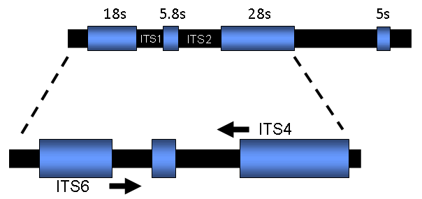
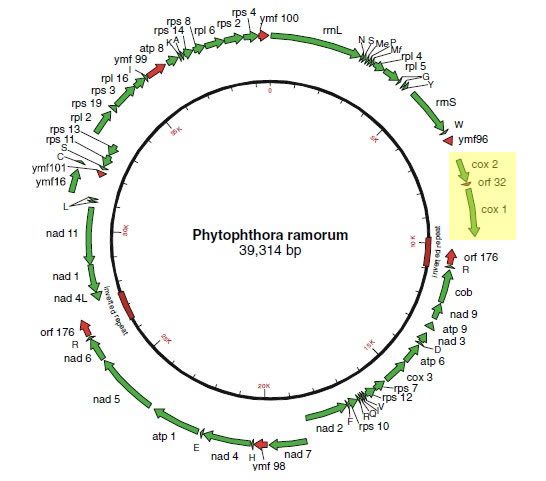

The nuclear ribosomal RNA (rRNA) genes (small subunit, large subunit and 5.8S) are organized in a cluster but separated by two internal transcribed spacer regions (ITS1 and ITS2):
Typically, in eukaryotic genomes the rRNA genes are repeated in tandem arrays in the order of several hundred, or possibly thousands of copies (Hillis et al. 2006). The spacer regions ITS1 and ITS2 that are transcribed, but not translated, are more variable than the actual rRNA genes. The spacer regions diverge rapidly enough to be informative in distinguishing most (but not all) Phytophthora species (Cooke et al. 2000). Primers ITS4 and ITS6 are used for amplification of the ITS region in Phytophthora (White et al. 1990; Cooke and Duncan, 1997; Cooke et al. 2000).
The cytochrome c oxidase subunit 1 and 2 genes (cox1 and cox2, respectively) are present as a gene cluster (see highlighted area) on the mitochondrial chromosome in Phytophthora (as well as Pythium and many plant species)(Martin et al. 2007):
Due to interspecific sequence variation the spacer region between these two genes can be used for development of species-specific markers (Martin et al. 2004, Tooley et al. 2006) as well as for sequence-based identification of species.
We generally do not isolate DNA, but instead obtain a tuft of mycelium from a culture. Scrape along the surface of a plate (1-2cm) toward the margins of a growing culture where sporangia are present on hyphae using a sterile, dry toothpick. Twirl toothpick into 100 µl PCR tube containing dH2O. Boil at 95.9°C for 5min. Proceed to PCR following conditions presented below:
| Component | Final concentration |
|---|---|
| DNA (Toothpick) |
1-3 ng/µl
|
| dNTP (2.0mM) |
200 µM
|
| ITS6 10uM stock |
0.4 µM
|
| ITS4 10uM stock |
0.4 µM
|
| 10 x Taq Buffer with 15mM MgCl2 |
1 x
|
| Taq 5u/µl |
0.05 u/µl
|
| dWater |
NA
|
| Primer | Sequence |
|---|---|
| ITS4: | 5’-TCCTCCGCTTATTGATATGC-3’ |
| ITS6: | 5’-GAAGGTGAAGTCGTAACAAGG-3’ |
Phytophthora spp. typically yield PCR products in the range of 862-941bp.
| Step | Cycles | Conditions |
|---|---|---|
| 1 | 1 | 94C for 3min; |
| 2 3 4 |
35 (repeat steps 2-4) |
94C for 1min; |
| 5 | 1 | 72C for 10min; |
| - | - | Store at -20C until used |
The primer annealing sites are in the flanking gene sequences and are specific for amplification of Phytophthora spp. (they will not amplify the related genus Pythium or plant DNA when the described amplification conditions are followed):
Several considerations when using this marker system:
| Component |
Final concentration
|
| dNTP |
0.5 µl
|
| FMPhy-8b (12.5 µM) |
2.0 µl
|
| FMPhy-10b (12.5 µM) |
2.0 µl
|
| MgCl2 (3 mM) |
3.0 µl
|
| AmpliTaq (N8080172) |
0.2 µl
|
| Glycerol (50%; Roche cat. # 100 647) |
1.0 µl
|
| Buffer |
2.5 µl
|
| dWater (Sigma cat. # W4502) | to final volume of 25 µl |
| Primer | Sequence |
| FMPhy-8b: | 5’-AAAAGAGAAGGTGTTTTTTATGGA-3’ |
| FMPhy-10b | 5’-GCAAAAGCACTAAAAATTAAATATAA-3’ |
| Step | Cycles | Conditions |
| 1 | 1 | 95C for 3min; |
| 2 3 4 |
40 (repeat steps 2-4) |
95C for 1min; |
| 5 | 1 | 72C for 5min; |
| - | - | Store at -20C until used |
Samples from the first round amplification are diluted 1:100.
| Component |
Final concentration
|
| Buffer |
2.5 µl
|
| MgCl2 (3 mM) |
3.0 µl
|
| dNTP mix |
0.5 µl
|
| FMPhy-8b (12.5 µM) |
0.5 µl
|
| FMPhy-10b (12.5 µM) |
0.5 µl
|
| AmpliTaq |
0.2 µl
|
| Diluted DNA from first round of amplification |
1.0 µl
|
| dWater (Sigma cat. # W4502) |
to final volume of 25 µl
|
| Step | Cycles | Conditions |
| 1 | 1 | 95C for 3min; |
| 2 3 |
35 (repeat steps 2-3) |
95C for 30sec; |
| 4 | 1 | 72C for 5min; |
| - | - | Store at -20C until used |
Additional details on using this region for diagnostics can be found at http://www.ars.usda.gov/Research/docs.htm?docid=8733.
Confirm presence of one amplicon by agarose gel electrophoresis. Follow instructions from your sequencing center to obtain ITS sequence. Sequence twice in forward and reverse directions.
Once sequence is returned to you, usually in form of an <abi> file, check sequence for quality (use a program such as Bioedit). ITS or Cox spacer sequences should be sequenced in both directions. If sequences are clean proceed to either ITS-BLAST or Cox-BLAST (links to your left) and submit sequence in FASTA format for species identification.
Occasionally you will observe polymorphic sites or sequences that abruptly end probably due to presence of and indel or because a hybridization event occurred. In this case additional work is needed to identify a species. A suggested next step included cloning and sequences to determine haplotypes and/or sequencing of additional nuclear or mitochondrial genes and BLAST search in PhytophthoraDB.
If you use this Phytophthora-ID for publishable research please cite the following reference:
Grünwald, N. J., Martin, F. N., Larsen, M. M., Sullivan, Press, C. M., Coffey, M. D., Hansen, E. M., and Parke, J. L. 2011. Phytophthora-ID.org: A sequence-based Phytophthora identification tool. Plant Disease 95: 337-342.
Cooke, D. E. L., and Duncan, J. M. 1997. Phylogenetic analysis of Phytophthora species based on ITS1 and ITS2 sequences of the ribosomal RNA gene repeat. Mycol. Res. 101:667-677
Cooke, D. E. L., Drenth, A., Duncan, J. M., Wagels, G., and Brasier, C. M. 2000. A molecular phylogeny of Phytophthora and related oomycetes. Fungal Genet. Biol. 30:17-32.
Grünwald, N. J., Martin, F. N., Larsen, M. M., Sullivan, Press, C. M., Coffey, M. D., Hansen, E. M., and Parke, J. L. 2011. Phytophthora-ID.org: A sequence-based Phytophthora identification tool. Plant Disease 95: 337-342.
Hillis, D. M., Moritz, C., and Mable, B. K. 1996. Molecular Systematics. Sinauer Associate, Inc., Sunderland, MA.
Martin, F.N, Tooley, P.W. and Blomquist, C. 2004. Molecular detection of Phytophthora ramorum, the causal agent of sudden oak death in California, and two additional species commonly recovered from diseased plant material. Phytopathology 94:621-631.
Martin F.N., Bensasson D., Tyler B.M., Boore J.L. 2007. Mitochondrial genome sequences and comparative genomics of Phytophthora ramorum and P. sojae. Current Genetics 51:285-296.
Tooley, P.W., Martin, F.N., Carras, M.M. and Frederick, R.D. 2006. Real-time fluorescent PCR detection of Phytophthora ramorum and Phytophthora pseudosyringae using mitochondrial gene regions. Phytopathology 96: 336-345
White, T. J., Bruns, T., Lee, S., and Taylor, J. 1990. Amplification and direct sequencing of fungal ribosomal RNA genes for phylogenetics. Pages 315-322 in: PCR protocols: a guide to methods and applications, M. A. Innis, D. H. Gelfand, J. J. Sninsky and T. J. White, eds. Academic Press, San Diego.